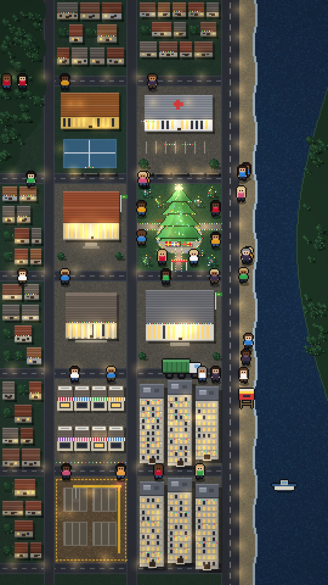

APARECE EM
Caraguá Pixel
Seguir
MAPA · PRÉVIA
O mapa de Caraguá Pixel
A cidade que nasceu vazia e agora tem morador em cada janela acesa. Toque num ponto do mapa para ver o lugar de perto.
936 moradores15 vereadores8 lojas para alugar1 árvore de Natal
Lugares da cidadeNovoMistérios
Toque num ponto para ver de perto
